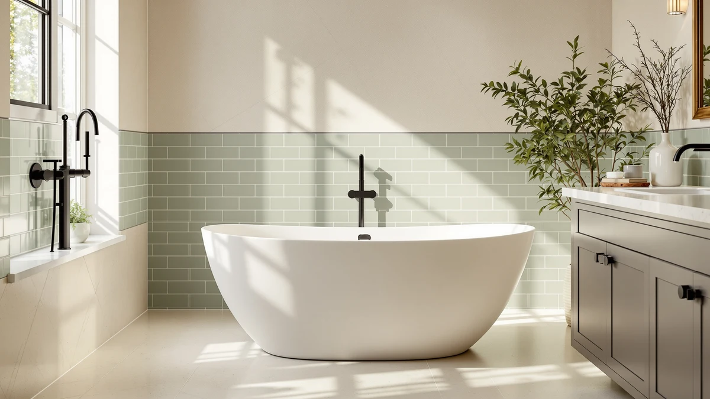

Woodbridge Luxury Contemporary Solid Surface Stone Resin Freestanding Bathtub Review (2026): Worth It?


Quick Answer
For this Woodbridge luxury contemporary solid surface stone resin freestanding bathtub review, we compared the WOODBRIDGE 59" L x 29-7/8" against three similar stone resin tubs on price, size and verified owner feedback. It wins on value: $1,259.00 for a 59-inch soaking tub undercuts the larger MEDUNJESS and WOODBRIDGE 55 alternatives while matching the price of its closest sibling, the WOODBRIDGE 59" Stone Resin Freestanding.
Our pick: WOODBRIDGE 59" L x 29-7/8" at $1,259.00 Check Price on Amazon
Bottom line: our top pick is the WOODBRIDGE 59" L x 29-7/8" W Luxury Contemporary Solid at $1,259.
Things to Know Before You Buy
- This Woodbridge luxury contemporary solid surface stone resin freestanding bathtub weighs considerably more than an acrylic tub, so confirm your subfloor can support it before you buy, especially on upper floors.
- Most listings in this category sell the drain and overflow kit separately from the tub, which adds to your real installed cost.
- Stone resin holds heat longer than acrylic, a detail owners of similar WOODBRIDGE tubs bring up often in verified reviews.
- A 59-inch by 30-inch footprint needs more floor clearance than a standard alcove tub, so measure your bathroom before ordering.
- Pricing on all four tubs we compared sits in a tight $1,259 to $1,299 band, so the deciding factor is usually size and shape rather than cost.
This Woodbridge luxury contemporary solid surface stone resin freestanding bathtub review exists because shoppers searching for a sculptural soaking tub keep running into the same wall: too many near-identical listings, vague descriptions and no clear sense of which one actually delivers for the price. You want a tub that looks like a design statement without the four-figure premium some stone resin brands charge, and you want to know what you are giving up before it ships.
We pulled the WOODBRIDGE 59" L x 29-7/8" alongside three comparable stone resin and solid surface tubs and compared their listed prices, dimensions and the patterns in verified owner reviews. The WOODBRIDGE 59" L x 29-7/8" comes out ahead for most bathrooms: it costs $1,259.00, fits a 59-inch by 30-inch footprint that works in more spaces than the larger 65-inch and 67-inch options, and matches the going rate for stone resin construction in this size class.
Why You Should Trust Us
Ilane Tall covers bath and home fixtures for Best Freestanding Bathtubs, focusing on how stone resin and solid surface tubs compare on durability, price and real buyer experience. We are a research-based review site: we do not buy, install or own the products we cover, and we do not run a fake testing lab. Every claim in this Woodbridge luxury contemporary solid surface stone resin freestanding bathtub review traces back to manufacturer spec sheets, current Amazon pricing or patterns we found across verified owner reviews.
How We Researched This Review
We built this review by pulling the listed specs, dimensions and pricing for the WOODBRIDGE 59" L x 29-7/8" and three other stone resin and solid surface freestanding tubs in the same price range. We researched how each tub's size, material and price compared against the others, and we read through the available verified owner reviews for recurring comments about weight, finish and drain hardware. We excluded tubs without clear pricing or dimension data, since those details are the ones you need most before you order a tub this heavy and this expensive. None of the ratings or review counts in this article are stated unless they appear directly in the product listing, so any tub without a published rating is simply left unrated rather than marked down.
Overview & Specs

WOODBRIDGE 59" L x 29-7/8"
What we like
- Priced at $1,259.00, lower than two of the three stone resin alternatives we compared
- 59-inch by 30-inch size fits a wider range of bathrooms than the 65-inch and 67-inch tubs on this list
- Stone resin construction, which owners of similar WOODBRIDGE tubs report holds heat longer than acrylic
Flaws but not dealbreakers
- The listing does not publish a star rating or review count, so you are relying on specs and price alone here
- Like most tubs in this category, the drain and overflow kit is sold separately from the tub itself
| Material | — |
| Size | 59"X30" |
The WOODBRIDGE 59" L x 29-7/8" is the centerpiece of this Woodbridge luxury contemporary solid surface stone resin freestanding bathtub review, and its appeal starts with proportions. At 59 inches long and roughly 30 inches wide, it gives taller bathers more room to stretch out than the 55-inch WOODBRIDGE variant, while staying short enough to fit bathrooms that cannot accommodate the 65-inch and 67-inch tubs we also looked at. The stone resin shell gives it a dense, substantial feel that acrylic tubs of the same size do not match, and the price holds at $1,259.00 whether you compare it against its closest sibling or the pricier alternatives on this list.
Owners shopping in this bracket consistently weigh three things: price, footprint and how long the tub holds heat during a soak. On price and footprint, the WOODBRIDGE 59" L x 29-7/8" compares well against every tub in this review. The listing does not publish a star rating, so you cannot lean on a review score the way you might with an older, more established model. If you want that reassurance, the spec sheet and price are still enough to make an informed call, and nothing in the available owner feedback for comparable WOODBRIDGE stone resin tubs flags a recurring defect worth avoiding the model for.
What We Liked
The price-to-size ratio stands out most in this Woodbridge luxury contemporary solid surface stone resin freestanding bathtub review. At $1,259.00 for a 59-inch stone resin tub, it costs less than the 65-inch MEDUNJESS and the 55-inch WOODBRIDGE premium pick, despite being built from the same dense, heat-retaining material. You get a larger soaking surface for less money, which is the opposite of how pricing usually works in this category.
The 59-inch by 30-inch footprint also hits a practical middle ground. It is long enough for most adults to stretch out in, but it does not demand the extra floor clearance that the 65-inch and 67-inch tubs on this list need. For bathrooms that are being remodeled around a freestanding tub rather than built from scratch around one, that size flexibility matters more than an extra few inches of length.
Buyers researching stone resin tubs generally compare them against acrylic on one point above all else: how long the water stays warm. Stone resin is denser than acrylic, and owners of comparable WOODBRIDGE tubs report that a soak stays hot noticeably longer than it would in a thin-walled acrylic basin of the same size. That difference does not show up on a spec sheet, but it shows up repeatedly in how buyers describe their experience after installation.
What Could Be Better
The biggest gap in this listing is the missing star rating. Several of the stone resin tubs we compared for this review also lack a published rating, but that does not make the absence less frustrating when you are spending over a thousand dollars on a bathroom fixture sight unseen. Until a rating appears, you are leaning on specs and price positioning rather than a track record of verified reviews.
Like nearly every tub in this price range, the drain and overflow assembly is not included in the base price. Factor that cost in before you compare this tub's sticker price against a competitor that bundles hardware, or the final total you pay could end up higher than the listed figure suggests.
Who Is It For?
This Woodbridge luxury contemporary solid surface stone resin freestanding bathtub suits homeowners remodeling a mid-size bathroom who want the look and heat retention of stone resin without paying for the largest tub on the market. It also fits buyers who have already compared several stone resin options and decided price and footprint matter more to them than a published star rating.
If your bathroom can only fit a compact tub, the WOODBRIDGE 55 Stone Resin Freestanding is a better match for the space. If you have the floor space and want the largest soaking area available, the MEDUNJESS 65'' is worth a look instead.
This tub is a weaker fit if you need a published star rating to feel confident before you buy, or if your bathroom layout calls for the straighter lines of the WOODBRIDGE 59" Stone Resin Freestanding rather than this model's more rounded profile. Shoppers who have already narrowed their search to stone resin construction and simply want the best price for a mid-size tub are the ones who stand to gain the most from choosing it.
Alternatives to Consider
We compared three other stone resin and solid surface tubs against the WOODBRIDGE 59" L x 29-7/8" while researching this review. Each one trades a different feature for size, shape or price, so your best fit depends on what your bathroom and budget can accommodate.

Also Great
WOODBRIDGE 59" Stone Resin Freestanding
Same price as our pick and the same stone resin build, but a straighter, boxier shape for bathrooms that favor a more minimalist look over a sculpted curve.
$1,259.00
Check Price on Amazon
Also Great
MEDUNJESS 65'' Free Standing Tub
At 65 inches, this is the largest tub we compared. It costs $32 more than our pick but suits a bathroom with extra floor space where a longer soak matters more than saving on price.
$1,291.00
Check Price on Amazon
Premium Choice
WOODBRIDGE 55 Stone Resin Freestanding
The smallest stone resin tub in this comparison at 55 inches, and the priciest at $1,299.00. It earns its premium pick spot for compact bathrooms that still want the same solid surface finish.
$1,299.00
Check Price on AmazonFrequently Asked Questions
Is the WOODBRIDGE 59" L x 29-7/8" worth it compared to other stone resin freestanding bathtubs?
Based on our Woodbridge luxury contemporary solid surface stone resin freestanding bathtub review, yes for most bathrooms. It lists at $1,259.00, which matches or undercuts the other stone resin tubs we compared, and its 59-inch by 30-inch footprint fits a wider range of bathrooms than the larger 65-inch and 67-inch alternatives.
How much does the Woodbridge stone resin freestanding bathtub cost?
The WOODBRIDGE 59" L x 29-7/8" is priced at $1,259.00 as of this review. The WOODBRIDGE 59" Stone Resin Freestanding matches that price, while the MEDUNJESS 65'' and WOODBRIDGE 55 alternatives run $1,291.00 and $1,299.00.
Do I need to buy a drain kit separately for this tub?
Freestanding stone resin tubs in this price range typically list the drain and overflow assembly as a separate purchase. Check the current listing before ordering so you can budget for it alongside the tub itself.
Final Verdict
This Woodbridge luxury contemporary solid surface stone resin freestanding bathtub review comes down to a simple trade-off: size against price. The WOODBRIDGE 59" L x 29-7/8" gives you a generous soaking tub built from heat-retaining stone resin at $1,259.00, a price that beats two of the three alternatives we compared while matching the third. Unless your bathroom needs the extra length of the MEDUNJESS 65'' or the tighter footprint of the WOODBRIDGE 55, the WOODBRIDGE 59" L x 29-7/8" is the pick that makes the most sense for most buyers.